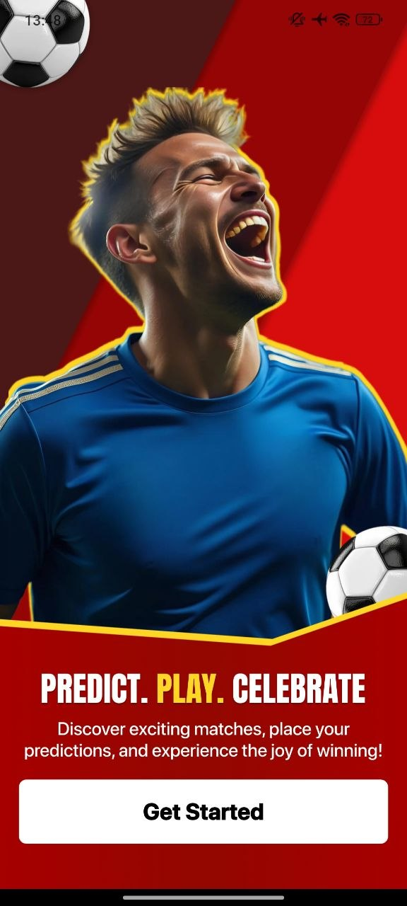
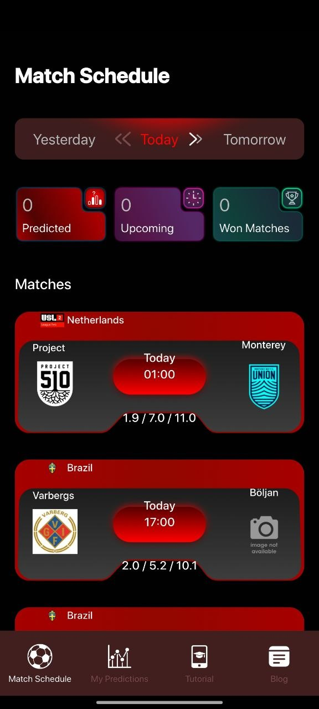
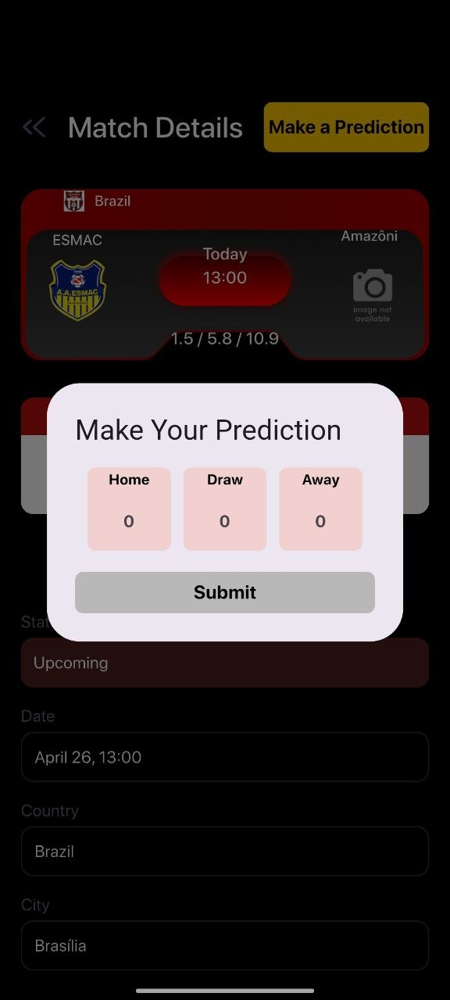
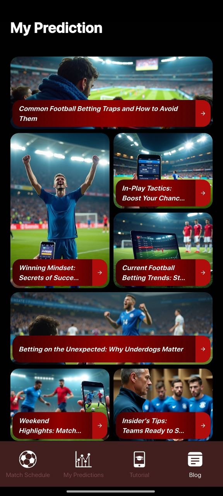
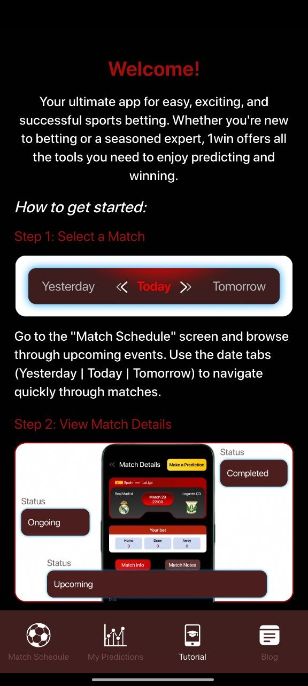
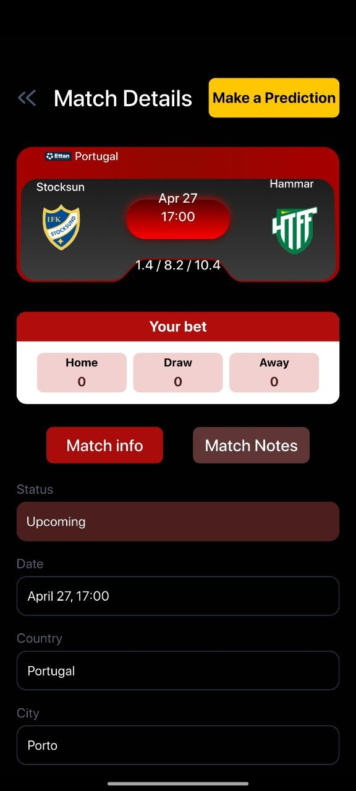

01
Match Schedule
Navigate yesterday, today, and tomorrow with clear match cards and quick status overview.
Football predictions companion
Wnmx Discover Matches brings football schedules, prediction tools, match details, tutorial guidance, and football insights into one bold mobile experience.



Features
Browse upcoming matches, open detailed match cards, make predictions, and read football-focused articles in a dark, stadium-inspired interface.
Navigate yesterday, today, and tomorrow with clear match cards and quick status overview.
Choose home, draw, or away inside a clean prediction modal built for fast decisions.
Open country, city, date, team names, odds-style info, and match status in one place.
Read focused football content, trends, highlights, tactics, and mindset topics.
Learn how to select matches, view details, and move through the app step by step.
Red, black, gold, and stadium imagery create an energetic football atmosphere.
Match experience
The app places football fixtures at the center. You can move between dates, review predicted, upcoming, and won matches, then open detailed screens for each event.
Screen preview
A curated look at the app experience: schedule, blog, tutorial, details, and prediction.



Why it feels different
Wnmx Discover Matches combines dramatic football visuals with clear mobile controls. The result feels powerful, direct, and easy to use before every fixture.
Open the app, see the schedule, and move straight into match details.
Country labels, team names, timings, and football content stay visually prominent.
Home, draw, and away options are presented clearly without confusing layouts.
Workflow
Use date tabs to move through matches and check upcoming football events.
View the selected teams, time, status, country, and city in a dedicated match screen.
Select home, draw, or away inside a focused prediction panel.
Explore blog content and tutorial guidance to better understand the app flow.
Highlights
The app includes football articles and themed screens with stadium imagery, giving users more to explore beyond the match schedule.
“The schedule screen is direct, bold, and easy to understand.”
Football fan“Prediction choices are simple, and the app has a strong match-day feel.”
Match watcher“The blog and tutorial screens make the app feel more complete.”
Daily userDownload now
Install Wnmx Discover Matches and explore football schedules, predictions, details, tutorials, and football content in one premium mobile app.